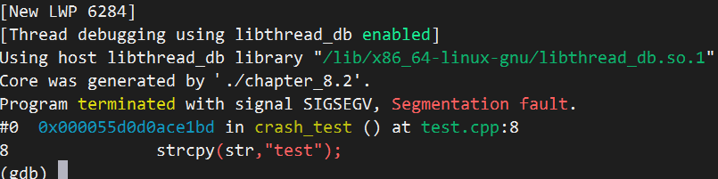

内核转储文件--应用程序崩溃分析
Ubuntu
设置如下的程序 以下就是生成了dump文件1
2
3
4
5
6
7
8
9
10
11
12
13
14
15
using namespace std;
void crash_test()
{
char *str =0;
strcpy(str,"test"); // segment fault
}
int main()
{
cout << "crash test" << endl;
crash_test();
return 0;
}

查看coredump是否打开
查看命令：ulimit -c
打开命令：ulimit -c unlimited
0：关闭
unlimited：打开 ### 配置规则 主要看内核参数kernel.core_pattern，路径为/proc/sys/kernel/core_pattern。
所以修改有两种方法
1、sysctl -w kernel.core_pattern=/root/core/core-%e.%s.%p.%t
2、echo -e "/root/core/core-%e.%s.%p.%t" > /proc/sys/kernel/core_pattern
%e：进程名称
%s：崩溃时收到的信号
%p：进程ID
%t：时间戳
注意关闭apport服务
这个服务会读取core文件分析，不会保存源文件 1
systemctl stop apport.service
CentOS
编辑/etc/security/limits.conf文件
末尾增加soft core unlimited，表示应用程序生成的core文件不受大小限制 ### 配置规则 和Ubuntu一样 ### reboot
分析崩溃
1 | gdb test /root/corefile/core-test.11.6284.1705062175 |

发现最后的出错函数位于strcpy这一处，源文件第8行。